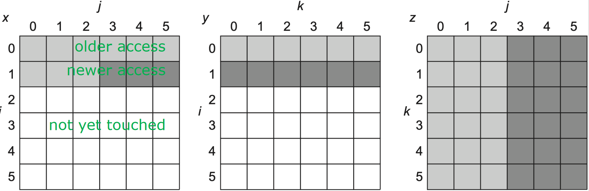
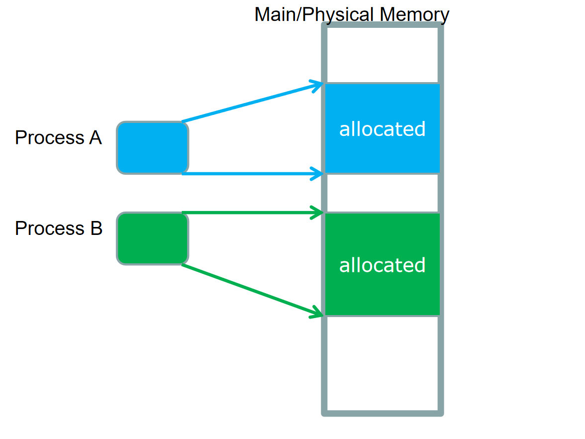
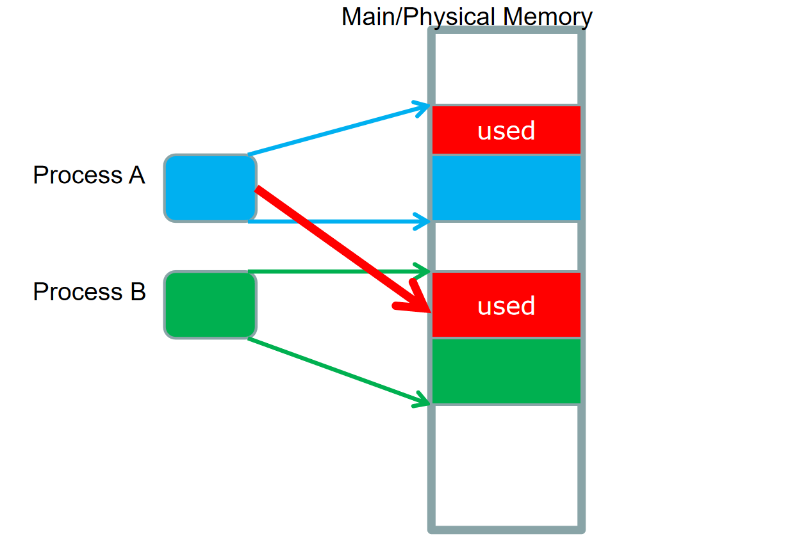
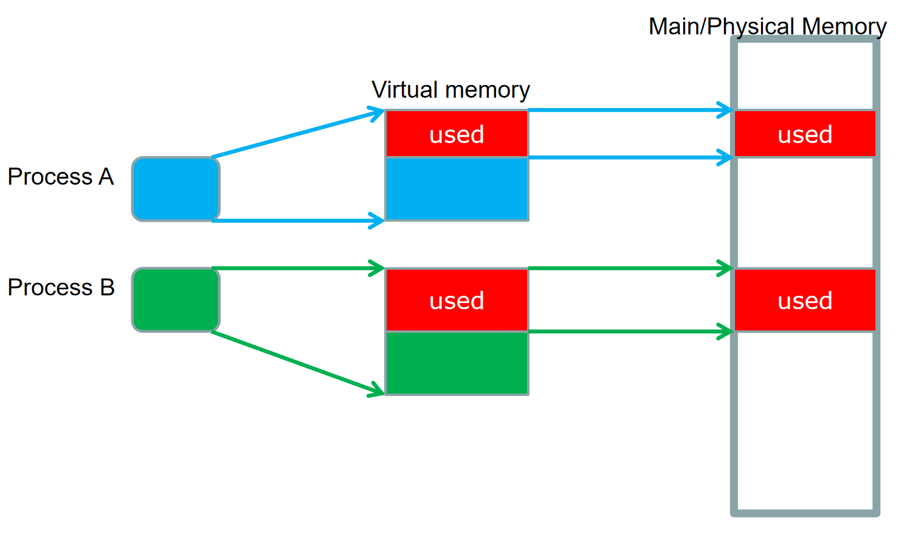

计算机体系结构2-1-2: 软硬协同与虚拟内存的保护屏障
课程衔接
在上一讲中，我们探讨了六种旨在优化平均内存访问时间（AMAT）的硬件技术。我们分别从降低命中时间、提升带宽和减少缺失代价三个方面入手，理解了每一个设计决策背后的精妙权衡。
然而，架构师的工具箱远不止于此。今天，我们将探索另外四大高级优化技术，其中最引人注见的是 软硬件协同 的力量。我们将看到，聪明的编译器如何能够在不改变一行硬件代码的情况下，通过重塑程序的访问模式，奇迹般地降低缓存缺失率。我们还将学习 预取（Prefetching） 技术，这是一种试图预测未来、提前将数据载入缓存的“魔法”，它同时存在于硬件和软件两个层面。最后，我们会接触到代表着存储技术未来的 高带宽内存（HBM），看看它是如何为超大容量缓存的设计带来新的机遇与挑战。
最后，我们将从性能的追求转向安全的保障，引入计算机系统中另一个至关重要的抽象层——虚拟内存（Virtual Memory）。我们将理解虚拟内存的设计动机，以及它如何利用存储器层次结构的理念，为现代多任务操作系统提供了坚不可摧的 内存保护和隔离 机制。
第四部分：重塑访问模式
到目前为止，我们讨论的优化都集中在硬件层面，但软件——特别是编译器——同样可以在优化缓存性能方面发挥巨大作用。编译器优化的最大优势在于：它可以在不增加任何硬件成本的情况下，显著降低程序的缓存缺失率。
优化技术 #7：编译器优化 (Compiler Optimizations)
-
设计动机：硬件看到的是一连串无差别的内存访问指令。而编译器拥有更高层次的程序结构信息（如循环、数组）。利用这些信息，编译器可以重新组织代码，使其数据访问模式更加“缓存友好”，即最大化地利用空间和时间局部性。
-
实现策略1：循环交换 (Loop Interchange)
- 问题：考虑一个按行存储的二维数组
x[i][j]。观察以下C代码片段：
/* Before */ for (j = 0; j < 100; j = j + 1) for (i = 0; i < 5000; i = i + 1) x[i][j] = 2 * x[i][j];这段代码的内存访问模式是
x[0][0], x[1][0], x[2][0], ...。由于数组是按行存储的，这意味着每次访问都会跳跃一大段内存（一整行），这严重破坏了空间局部性，会导致大量的缓存缺失。- 解决方案：编译器只需简单地交换内外层循环：
/* After */ for (i = 0; i < 5000; i = i + 1) for (j = 0; j < 100; j = j + 1) x[i][j] = 2 * x[i][j];现在，内存访问模式变成了
x[0][0], x[0][1], x[0][2], ...，完美地按照数据在内存中的存储顺序进行访问。当第一个元素x[0][0]导致Cache Miss时，整个缓存块（包含x[0][1],x[0][2]等）会被加载进来，后续的多次访问都会命中。 - 问题：考虑一个按行存储的二维数组
-
实现策略2：分块 (Blocking / Tiling)
- 问题：矩阵乘法
C = A * B是一个更复杂的例子。在计算C[i][j]时，需要访问A的第i行和B的第j列。无论循环顺序如何，总会有一个矩阵是按列访问的，破坏空间局部性。更糟糕的是，当矩阵很大时，计算完一行C之后，再去计算下一行时，之前加载的A或B的数据可能早已被从缓存中替换出去了，这又破坏了时间局部性。  - 解决方案：不要一次计算一整行或一整列，而是将矩阵分块，计算一个个小的子矩阵。
/* Simplified Blocking Concept */ for (ii = 0; ii < N; ii += B) // Iterate over blocks for (jj = 0; jj < N; jj += B) for (kk = 0; kk < N; kk += B) for (i = ii; i < ii + B; i++) // Compute on the block for (j = jj; j < jj + B; j++) for (k = kk; k < kk + B; k++) C[i][j] += A[i][k] * B[k][j];通过将计算限制在一个小的“块”（Block/Tile）内，我们可以确保这个块的数据在计算完成前都驻留在缓存中。这样，我们最大化了加载到缓存中的数据的使用次数，极大地提升了时间和空间局部性。
- 问题：矩阵乘法
-
权衡：
- 优点：零硬件成本，效果显著。
- 缺点：依赖于编译器对程序行为的静态分析能力。对于复杂的、通过指针进行的间接内存访问，编译器往往难以分析和优化。
第五部分：预取
与其在发生Cache Miss后被动地等待，我们能否像先知一样，在CPU需要某个数据之前，就提前将它从慢速内存取到缓存中？这就是预取 (Prefetching) 的核心思想。
优化技术 #8：硬件预取 (Hardware Prefetching)
- 设计动机：许多程序的内存访问模式非常有规律（例如，顺序访问数组）。硬件可以动态地识别这些模式，并自动发起预取请求。
- 实现策略：
- 流缓冲 (Stream Buffer)：最经典的硬件预取器。它会监视缓存的缺失地址。当检测到一个或多个连续地址的缺失（例如，访问了块
B，然后是块B+1），预取器就会判断这是一个“流”（stream），并自动发出对块B+2,B+3...的预取请求。 - 预取的数据通常被放入一个独立的流缓冲中，而不是直接放入主缓存。当CPU真正访问该数据时，如果它在流缓冲中，就将其快速移入缓存并提供给CPU，同时取消掉原来的内存请求。
- 流缓冲 (Stream Buffer)：最经典的硬件预取器。它会监视缓存的缺失地址。当检测到一个或多个连续地址的缺失（例如，访问了块
- 权衡：
- 优点：对软件完全透明，无需修改代码。能有效捕捉简单的、规则的访问模式。
- 缺点：
- 时机问题：预取太早，可能会在CPU使用前就被替换出去；预取太晚，则无法完全隐藏延迟。
- 准确性问题：错误的预取（CPU最终并未使用该数据）不仅浪费了宝贵的内存带宽，还可能“污染”缓存，将有用的数据替换出去。
- 资源开销：预取逻辑本身需要消耗芯片面积和功耗。
优化技术 #9：编译器控制的预取 (Compiler-Controlled Prefetching)
- 设计动机：硬件预取器只能看到地址流，而编译器能理解程序的语义。对于不规则但有规律的访问模式（如链表遍历、稀疏矩阵计算），编译器可以比硬件做出更精准的预测。
- 实现策略：
- ISA提供专门的
prefetch指令。 - 编译器在分析循环等结构后，在代码中显式插入
prefetch指令。例如，在一个循环处理数组a[i]时，编译器可以在处理a[i]的计算代码之前，插入一条prefetch(a[i+N])指令，提前加载未来第N次迭代将要用到的数据。
- ISA提供专门的
- 权衡：
- 优点：比硬件预取更灵活，能处理更复杂的访问模式。
- 缺点：
prefetch指令本身会占用CPU的执行资源，增加了指令开销。- 确定预取的“提前量”（lookahead distance）非常困难，需要精确地知道缺失代价才能做出最优决策，而这在不同系统上是变化的。
- 增加了编译器的复杂性。
第六部分：高带宽内存（HBM）的应用
优化技术 #10：使用HBM作为大容量缓存 (HBM as a Large Cache)
- 设计动机：我们正进入一个数据密集型计算的时代，无论是AI训练还是科学计算，都对内存带宽和容量提出了前所未有的要求。传统DDR内存受限于物理引脚数量，带宽增长已达瓶颈。
- 技术突破：高带宽内存 (High-Bandwidth Memory, HBM)
- HBM通过3D堆叠技术，将多个DRAM裸片垂直堆叠起来，并通过极宽的接口（如1024位）与CPU/GPU连接。这使得它能在极小的物理面积内，提供比DDR内存高出一个数量级的带宽。
- 新的设计可能性：我们可以利用HBM的巨大容量（数GB到数十GB）和高带宽，将其作为CPU的最后一级缓存（LLC，如L4 Cache）。
- 设计挑战：
- 标签存储开销：一个1GiB的缓存，如果块大小为64B，那么需要存储的标签（Tag）本身就高达96MiB！将这么多标签存储在高速SRAM中是不现实的。
- 访问延迟：如果将标签也存在HBM中，那么一次缓存命中就需要两次HBM访问：一次读Tag，一次读Data。这会大大增加命中延迟。
- 创新解决方案：
- 同行列优化：将一个缓存块的Tag和Data存储在HBM的同一个物理行（row）中。虽然DRAM打开一个新行的延迟很高，但访问已打开行内的数据则快得多。我们可以先访问Tag，如果命中，再快速访问同一行的数据。
- Alloy Cache：一种更激进的直接映射缓存设计。它将Tag和Data在物理上紧邻存放，并通过一次HBM的突发传输（burst transfer）将两者同时读出，从而实现单周期访问。
- 前景：使用HBM作为缓存是当前高性能计算领域的一个重要研究方向，它有望极大地缓解内存墙问题，但也带来了全新的架构设计挑战。
第七部分：虚拟内存与内存保护
到目前为止，我们的讨论都围绕着性能。但现代计算机系统还有一个同等重要的目标：安全与可靠。在一个同时运行着操作系统、多个用户程序、网页浏览器等复杂软件的系统上，我们如何确保一个进程的错误（或恶意行为）不会影响到其他进程或操作系统本身？答案是：虚拟内存 (Virtual Memory, VM)。
7.1 虚拟内存之前的混沌世界
在虚拟内存出现之前，程序直接使用物理地址访问内存。操作系统负责为每个程序分配一块连续的物理内存。

这种方式存在致命缺陷：
- 内存浪费：程序申请了1GB内存，但可能只用了100MB，剩余的900MB就被浪费了（内部碎片）。同时，由于要求连续分配，即使总空闲内存足够，也可能因为没有足够大的连续块而分配失败（外部碎片）。
- 缺乏保护：程序中的一个指针错误，就可能意外地修改到另一个程序的内存空间，甚至操作系统内核的数据，导致整个系统崩溃。恶意程序更是可以为所欲为。 
7.2 虚拟内存的革命性抽象
虚拟内存的设计思想，是在程序和物理内存之间增加一个间接层。
- 每个进程都拥有自己私有的、独立的、从0开始的、连续的虚拟地址空间。
- CPU发出的地址是虚拟地址。这个虚拟地址会经过一个由硬件（内存管理单元，MMU）和操作系统共同管理的地址翻译 (Address Translation) 过程，转换成一个物理地址，最终才被送到内存总线。

7.3 虚拟内存带来的四大好处
- 内存管理简化与效率提升：
- 操作系统可以为进程分配非连续的物理内存页（Page），但在进程看来，它的地址空间仍然是连续的。这极大地减少了内存碎片，提高了内存利用率。
- 进程可以共享物理内存。例如，多个进程可以将其虚拟地址空间中的C标准库部分，映射到物理内存中的同一个C库副本上，节省了大量内存。
- 坚不可摧的内存保护：
- 地址翻译机制是实现保护的核心。MMU中的页表（Page Table）不仅存储了虚拟页到物理页的映射关系，还存储了该页的访问权限（读、写、执行）。
- 如果一个进程试图写入一个只读的页（如代码段），或者访问一个不属于它的页，MMU会立即检测到并触发一个硬件异常（缺页故障 Page Fault），将控制权交给操作系统。操作系统会判断这是一个非法访问，并终止该进程。
- 这就在硬件层面实现了进程间的完全隔离。
- 按需分页 (Demand Paging)：
- 程序启动时，无需将整个程序都加载到内存。只需加载开始执行所必需的几个页。当程序访问到一个尚未在内存中的页时，会触发Page Fault，操作系统再负责从磁盘上将该页加载进来。这使得程序可以运行即使其大小超过了物理内存的总量。
- 安全基石：虚拟内存为现代安全机制如地址空间布局随机化（ASLR） 提供了基础。
7.4 虚拟内存与体系结构
为了支持虚拟内存，计算机体系结构必须提供四个核心机制：
- 两种处理器模式：至少要有用户模式 (User Mode) 和 内核模式 (Supervisor/Kernel Mode)。用户程序运行在用户模式，权限受限。操作系统运行在内核模式，拥有最高权限，可以访问所有硬件资源和修改页表。
- 受保护的处理器状态：必须有一部分处理器状态（如页表基地址寄存器），用户程序只能读不能写。
- 模式切换机制：提供从用户模式陷入（trap）到内核模式的机制（如系统调用 System Call），以及从内核模式返回用户模式的机制。
- 地址翻译与保护机制：即MMU硬件，用于高效地进行地址翻译和权限检查。
7.5 虚拟机：保护的再升级
操作系统的代码量极其庞大（数千万行），其中不可避免地存在成千上万的bug。如果操作系统内核本身被攻破，那么基于虚拟内存的保护机制也就土崩瓦解了。
虚拟机 (Virtual Machine, VM) 提供了一个更强的隔离层。
- 一个称为虚拟机监视器 (VMM) 或 Hypervisor 的、代码量远小于操作系统的软件层，直接运行在硬件之上。
- VMM可以创建多个虚拟机，每个虚拟机都可以运行一个完整的、未经修改的客户操作系统（Guest OS）。
- VMM负责虚拟化CPU、内存和I/O设备，并确保虚拟机之间的绝对隔离。一个虚拟机内的操作系统崩溃或被攻破，完全不会影响到其他虚拟机或宿主系统。
- 这对于云计算和数据中心的多租户环境至关重要。